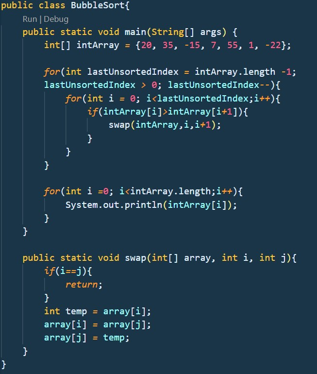
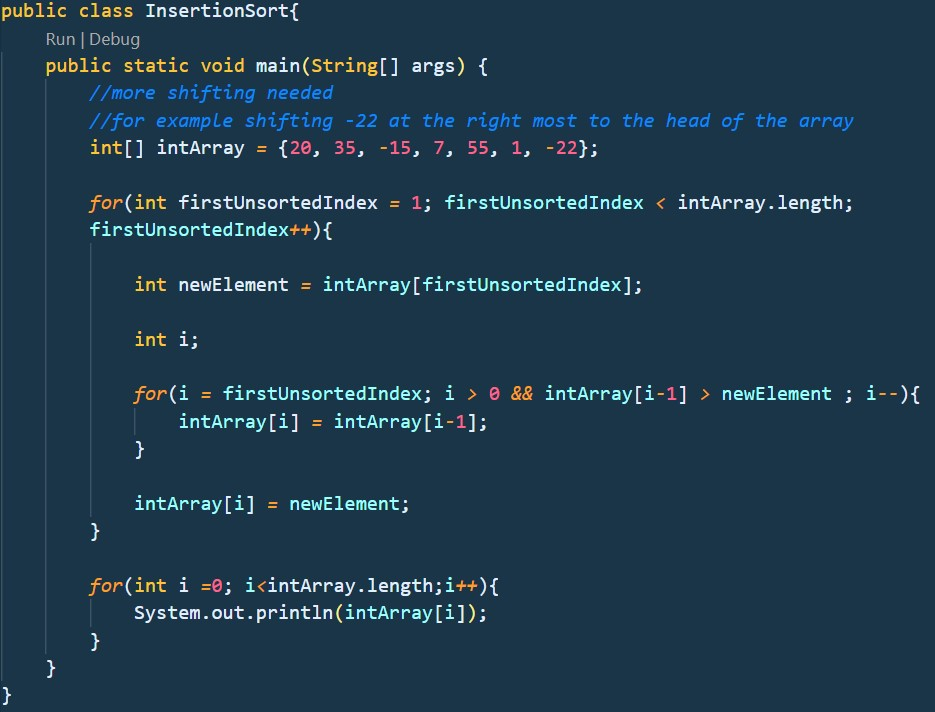
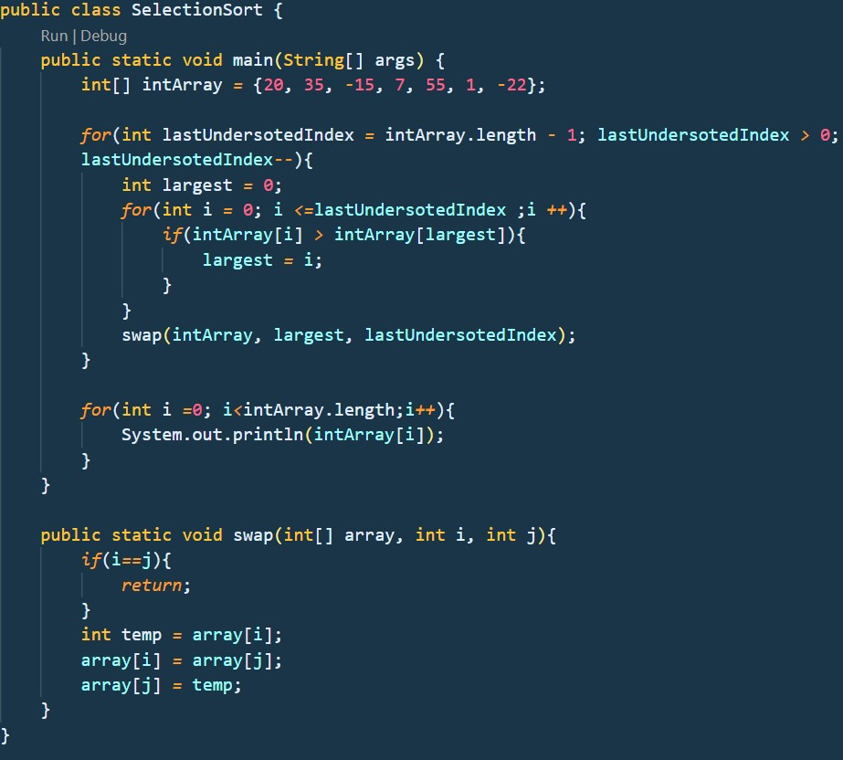

**Load Factor**
-describe how full a hash table is
-number of items / capacity = size / capacity
-used to decide when to resize array backing the hash tables
-too low = lots of empty space
-too high = increase likelihood of collisions
Hash table can be implemented using Array. To do so, we have to create an array first.
We then have to define how should the elements to be inserted into the array be hashed
using the hashKey() method.
**But this will cause a problem!**
For example, when the hash key is defined based on the length of String,
two String with same length() will be occupying the same index of the array and this
will cause a collision.
**To solve this problem!**
Implement Linear Probing, it simply means increasing the hash key in linear order
until it reaches a suitable index to be inserted. 1 probe means increase the hash key by 1.
Code above solved the collision issue. When both a collision happened and the hash
key is equals to the length of the array, there is no more space to insert the new
item so we will start at the front of the array to find a suitable position to store
the new item.
**Worst case: O(n) time complexity**
In the worst case scenario we have to traverse the array to find a suitable index to
insert the item.
**Better way?**
Decrease the probes used by implementing a better hashing method.
Other strategy to deal with collision?
**Chaining!**
Selection sort as the name suggested, select an element that is largest at each iteration and place it at the rightmost position.
Array = [20, 35, -15, 7, 55, 1, -22]
Steps:
Insertion sort takes an element form the array starting from element with index position of 1, compare it to all the elements at the left and insert it to the correct position.
Example:
Array = [20, 35, -15, 7, 55, 1, -22]
Steps:
Selection sort as the name suggested, select an element that is largest at each iteration and place it at the rightmost position.
Array = [20, 35, -15, 7, 55, 1, -22]
